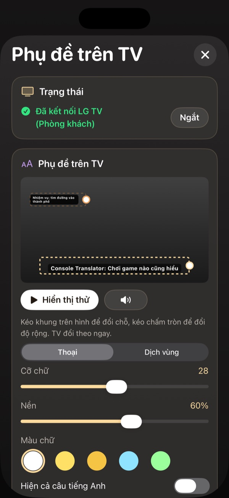

Phụ đề tiếng Việt khi chơi PS5 trên Android TV: Sony, TCL, Xiaomi
Cập nhật ngày 3/11/2026
Cài app Console Translator TV lên Android TV hoặc Google TV, cấp quyền hiển thị rồi ghép với điện thoại hoặc máy tính. PS5 vẫn cắm HDMI vào TV, còn phụ đề được gửi qua Wi-Fi.
Cài app trên TV
- Trên TV, cài app Downloader từ Google Play.
- Cho phép Downloader cài ứng dụng không rõ nguồn trong cài đặt TV.
- Trong Downloader, nhập mã 8179089.
- Tải xong, chọn Cài đặt.
TV Xiaomi nội địa Trung Quốc cần bản riêng. Mã Downloader cho bản này là 2484675.
Cấp quyền hiển thị
Mở Console Translator TV, chọn cấp quyền hiển thị trên ứng dụng khác và bật cho app. Khi xong, app báo đã sẵn sàng nhận phụ đề.
Ghép nối và chơi
Trên điện thoại hoặc máy tính, mở mục Phụ đề trên TV, chọn TV rồi làm theo hướng dẫn ghép nối. Nếu TV hiện mã 8 số, hãy nhập mã đó.


Trước đó, nếu chưa ghép với PS5, hãy làm theo bài kết nối app với PS5.
Câu hỏi thường gặp
TV nào dùng được?
Các TV chạy Android TV hoặc Google TV tương thích. Một số hãng phổ biến là Sony, TCL và Xiaomi. Hãy kiểm tra TV trước khi mua gói trả phí.
Hình PS5 có bị giảm chất lượng không?
PS5 vẫn cắm thẳng HDMI vào TV. Chỉ phụ đề và giọng đọc đi qua Wi-Fi.
Mất kết nối giữa chừng thì sao?
Kiểm tra điện thoại và TV vẫn chung Wi-Fi, app TV đang mở, rồi kết nối lại.
Xem thêm
Xem hướng dẫn cài đặt →Console Translator là dự án độc lập, không liên kết với Sony, LG hay Samsung. Tên game và nhãn hiệu thuộc về chủ sở hữu tương ứng.